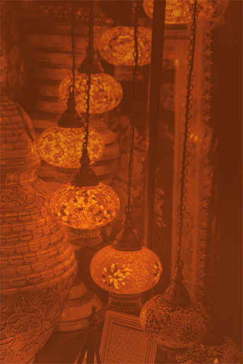

تقدم جامعة موناش أكثر من 170 درجة بكالوريوس و 330 تخصص في الدراسات العليا .تشمل خيارات البرامج التدريسية درجات البكالوريوس مفردة ومزدوجة ودرجات مع مرتبة الشرف والدبلومات، و الدراسات العليا عن طريق الدورة الدراسية ، ودرجات البحوث المتقدمة، والدكتوراه.
فيما يلي مجالات الدراسات االشائعة:

- توليد النساء
- نظم الموبايل
- البيولوجيا الجزيئية
- الوسائط المتعددة
- تركيب الشبكات والشبكات
- التمريض
- التغذية
- العلاج الوظيفي
- الاسعاف الطبي
- علم الأمراض (تحاليل طبية)
- فنون الأداء
- العلوم الصيدلانية
- علم الصيدلة وعلم السموم
- الصيدلة
- التصوير الفوتوغرافي / التصوير الاعلامي
- فيزياء
- علم وظائف الأعضاء
- العلاج الطبيعي
- اللدائن الهندسية
- التعليم الإبتدائي
- تصميم المنتجات
- علم النفس
- العلاقات العامة
- الأشعة والتصوير
- الروبوتات
- مرحلة التعيم الثانوي
- الرفاهة الاجتماعية
- الخدمة الاجتماعية
- الرياضة والترفيه في الهواء الطلق
- إحصائيات
- التنمية المستدامة
- التدريس
- الاتصالات السلكية واللاسلكية
- الاتصال البصري
- معالجة المياه والأراضي
- المحاسبة
- علم التشريح
- الهندسة المعمارية
- الآداب
- التشغيل الآلي للهندسة
- قانون البنوك
- علم الأعصاب السلوكي
- كيمياء حيوية
- الهندسة الطبية الحيوية
- العلوم الطبية الحيوية
- التكنولوجيا الحيوية
- البيئة المبنية
- الآعمال
- كيمياء
- الهندسة المدنية
- اتصالات
- علوم الكمبيوتر
- تطوير العقاقير
- التعليم في مرحلة الطفولة المبكرة
- الاقتصاد القياسي
- علم الاقتصاد
- التعليم
- الهندسة الكهربائية
- العلوم البيئية
- الفنون الجميلة
- علم المناعة
- تكنولوجيا ونظم المعلومات
- الأعمال الدولية
- صحافة
- القانون
- التسويق
- الاتصالات التسويقية
- هندسة الميكاترونكس
- الطب
- علم الأحياء الدقيقة